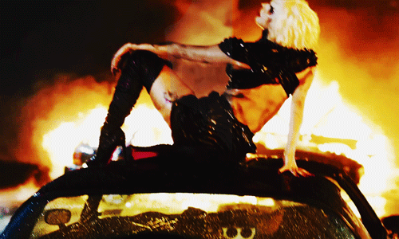

When I look back on my life it’s not that I don’t want to see things exactly as they happened, it’s just that I prefer to remember them in an artistic way. And truthfully the lie of it all is much more honest because I invented it. Clinical psychology tells us arguably that trauma is the ultimate killer. Memories are not recycled like atoms and particles in quantum physics. They can be lost forever. It’s sort of like my past is an unfinished painting and as the artist of that painting I must fill in all the ugly holes, and make it beautiful again. It’s not that I have been dishonest; it’s just that I loathe reality.
Lady Gaga
